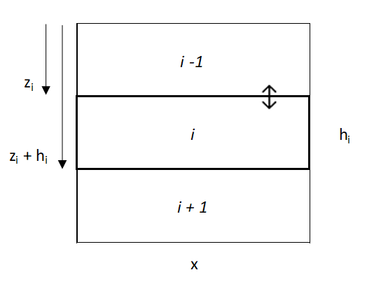

Chapter 5 Animals as Agents of Heterogeneity and Homogeneity in Soil and Landscape Development
5.1 Purpose and Goals
In a general sense, the purpose of paper is to create a quantitative framework, a model, to explore the relationship between bioturbation, erosion, and particle size distribution and their collective impact on soil profile and landscape development, across organisms.
To this end, there are three broad goals:
- Complete a review of bioturbation rates, frequency, and depth-dependence across organisms.
- Complete a review of the current bioturbation modeling landscape.
- Construct a model that integrates bioturbation, erosion, and particle size distribution on soil-profile and landscape scales.
5.3 Goal 2: Bioturbation Modeling Landscape
There are a number of bioturbation models already present in the literature
5.4 Goal 3: Modeling Building
5.4.1 Qualitative goals
To create a simple model with a limited number of input parameters that can…
- Describe stoneline development and clay homogenization [two of the most important texture parameters] [does advection need to be included for clay?]
- Describe the relationship between erosion rate and stoneline depth.
- Describe erosion and deposition as it relates to particle size [to adjust for the preferential erosion of fines] and explain the contribution to streams.
- Accommodate changes in erosion rates at discrete time steps [e.g. to simulate the impact of an invasive species or landscape change] or in the introduction of bioturbators.
- Represent a suite of bioturbators with unique particle size preferences [only one per model run though] and mixing rates.

Figure 1. Visualization of a single layer, i, and the upper and lower layers [this figure is a png now, build in r later if I want to keep]
5.5 References
Jarvis, N. J., Taylor, A., Larsbo, M., Etana, A., & Rosén, K. (2010). Modelling the effects of bioturbation on the re-distribution of 137Cs in an undisturbed grassland soil. European Journal of Soil Science, 61(1), 24–34. https://doi.org/10.1111/j.1365-2389.2009.01209.x
Johnson, M. O., Mudd, S. M., Pillans, B., Spooner, N. A., Keith Fifield, L., Kirkby, M. J., & Gloor, M. (2014). Quantifying the rate and depth dependence of bioturbation based on optically‐stimulated luminescence (OSL) dates and meteoric 10 Be. Earth Surface Processes and Landforms, 39(9), 1188–1196. https://doi.org/10.1002/esp.3520
Matisoff, G., Ketterer, M. E., Rosén, K., Mietelski, J. W., Vitko, L. F., Persson, H., & Lokas, E. (2011). Downward migration of Chernobyl-derived radionuclides in soils in Poland and Sweden. Applied Geochemistry, 26(1), 105–115. https://doi.org/10.1016/j.apgeochem.2010.11.007
Michel, E., Néel, M.-C., Capowiez, Y., Sammartino, S., Lafolie, F., Renault, P., & Pelosi, C. (2022). Making Waves: Modeling bioturbation in soils – are we burrowing in the right direction? Water Research, 216, 118342. https://doi.org/10.1016/j.watres.2022.118342
Román‐Sánchez, A., Laguna, A., Reimann, T., Giráldez, J. V., Peña, A., & Vanwalleghem, T. (2019). Bioturbation and erosion rates along the soil‐hillslope conveyor belt, part 2: Quantification using an analytical solution of the diffusion–advection equation. Earth Surface Processes and Landforms, 44(10), 2066–2080. https://doi.org/10.1002/esp.4626